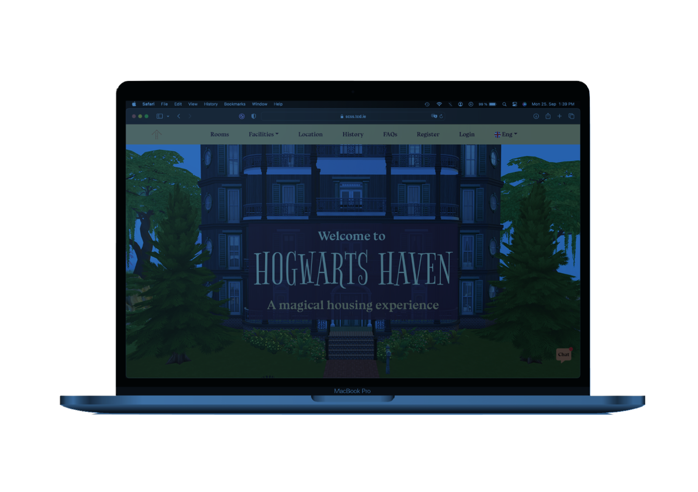
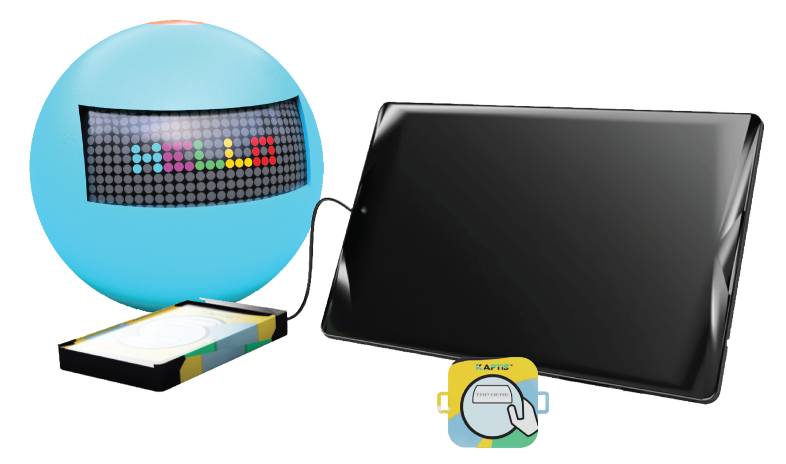

welcome.txt
Diksha “Dip” Pandey — UI/UX Designer
Dedicated designer delighted by details, turning dilemmas into designs.
Driven by a devotion to users and a desire for problem-solving. I stand at the intersection of technology and design, dedicated to creating user experiences that delight.
MSc Interactive Digital Media, Trinity College Dublin · BSc Industrial Design Engineering, The Hague University of Applied Sciences.
trinitytales — preview

A Unity game that turns the chaotic onboarding of international students at Trinity College Dublin into playable chapters — guided by Sam, the campus fox.
Open case study →hogwartshaven — preview

A hand-coded housing website for a fictional utopian residence — Hogwarts — built to spotlight Dublin's very real student housing crisis.
Open case study →kaptis — preview

An Arduino-powered smart ball that gets Dutch primary-school kids out of their chairs — learning spelling and renewable energy by throwing, scanning, and playing.
Open case study →about-dip.txt
About
Having recently graduated with a Master's in Interactive Digital Media (MSc) from Trinity College Dublin, coupled with a foundational Bachelor's in Industrial Design Engineering (BSc) from The Hague University of Applied Sciences, I offer a confluence of international education and multifaceted design experience, equipped to deal with any challenge in any environment.
In the dynamic world of UI/UX where the silent genius of seamless design speaks volumes, I am dedicated to creating user experiences that delight — eager to contribute to a future of designs that are transformative and empower users.
View CV ↗contact.app
Say hello
Let's make something delightful.
Made with ♥ — and zero monthly subscriptions.